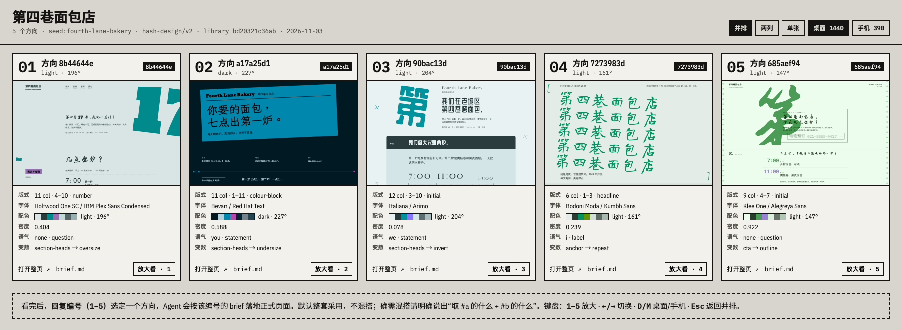
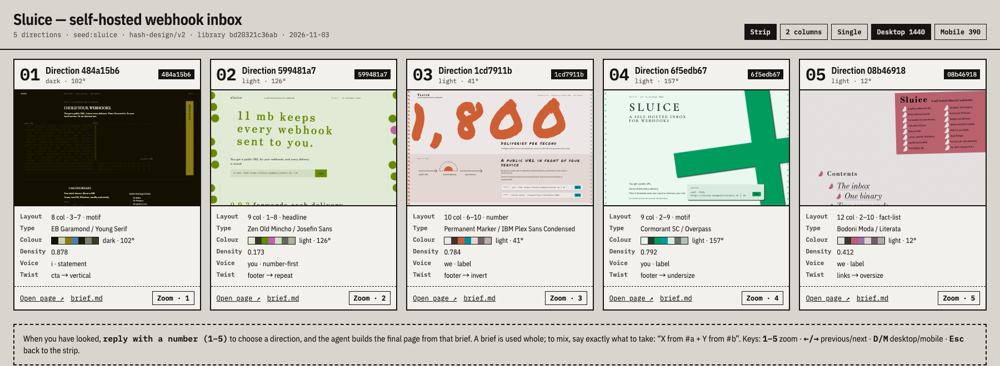
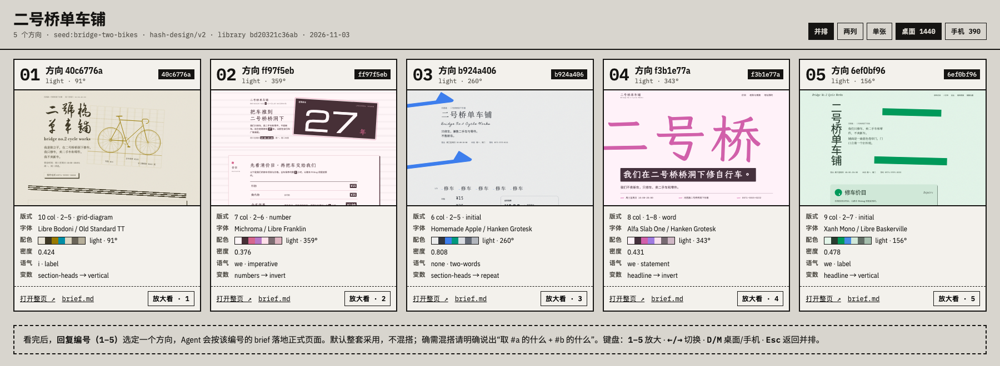
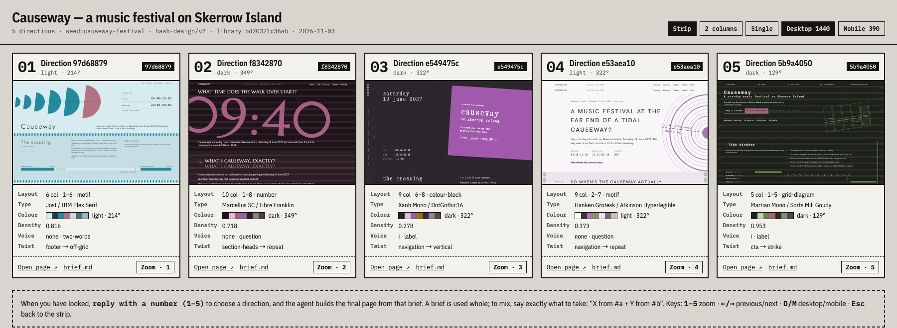

hash-design / examples
Four fact sheets, twenty random directions
Each example is one fact sheet put through roll_designs with a fixed seed: five SHA-256 hashes, five frozen briefs, five previews. Under hash-design/v2 each hash is the direction: its bytes set the palette, faces, grid, anchor, motif, motion, voice and twist. Every preview was rendered by a separate agent that saw only its own brief. No direction was picked by a model.
每个示例都是一份事实清单经 roll_designs（固定 seed）掷出 5 个 SHA-256 哈希、5 份冻结 brief，再由 5 个互不可见的 Agent 各自渲染。在 hash-design/v2 里哈希本身就是方向：它的字节决定配色、字体、栅格、首屏锚点、母题、动效、语气和变数。没有任何一个方向是模型自己挑的。
01 Fourth Lane Bakery 第四巷面包店
A neighbourhood sourdough bakery · Chinese page · seed fourth-lane-bakery · hash-design/v2 · facts, briefs, process

Open the compare page →| 01 | Holtwood One SC / IBM Plex Sans Condensed | light · 196° · 11 col · 8b44644e | brief |
| 02 | Bevan / Red Hat Text | dark · 227° · 11 col · a17a25d1 | brief |
| 03 | Italiana / Arimo | light · 204° · 12 col · 90bac13d | brief |
| 04 | Bodoni Moda / Kumbh Sans | light · 161° · 6 col · 7273983d | brief |
| 05 | Klee One / Alegreya Sans | light · 147° · 9 col · 685aef94 | brief |
02 Sluice
A self-hosted webhook inbox (developer tool) · English page · seed sluice · hash-design/v2 · facts, briefs, process

Open the compare page →| 01 | EB Garamond / Young Serif | dark · 102° · 8 col · 484a15b6 | brief |
| 02 | Zen Old Mincho / Josefin Sans | light · 126° · 9 col · 599481a7 | brief |
| 03 | Permanent Marker / IBM Plex Sans Condensed | light · 41° · 10 col · 1cd7911b | brief |
| 04 | Cormorant SC / Overpass | light · 157° · 9 col · 6f5edb67 | brief |
| 05 | Bodoni Moda / Literata | light · 12° · 12 col · 08b46918 | brief |
03 Bridge No.2 Cycle Works 二号桥单车铺
A bicycle repair shop under a bridge · Chinese page · seed bridge-two-bikes · hash-design/v2 · facts, briefs, process

Open the compare page →| 01 | Libre Bodoni / Old Standard TT | light · 91° · 10 col · 40c6776a | brief |
| 02 | Michroma / Libre Franklin | light · 359° · 7 col · ff97f5eb | brief |
| 03 | Homemade Apple / Hanken Grotesk | light · 260° · 6 col · b924a406 | brief |
| 04 | Alfa Slab One / Hanken Grotesk | light · 343° · 8 col · f3b1e77a | brief |
| 05 | Xanh Mono / Libre Baskerville | light · 156° · 9 col · 6ef0bf96 | brief |
04 Causeway
A one-day music festival on a tidal island · English page · seed causeway-festival · hash-design/v2 · facts, briefs, process

Open the compare page →| 01 | Jost / IBM Plex Serif | light · 214° · 6 col · 97d68879 | brief |
| 02 | Marcellus SC / Libre Franklin | dark · 349° · 10 col · f8342870 | brief |
| 03 | Xanh Mono / DotGothic16 | dark · 322° · 9 col · e549475c | brief |
| 04 | Hanken Grotesk / Atkinson Hyperlegible | light · 322° · 9 col · e53aea10 | brief |
| 05 | Martian Mono / Sorts Mill Goudy | dark · 129° · 5 col · 5b9a4050 | brief |
Source, docs and the MCP server: github.com/qybaihe/hash-design